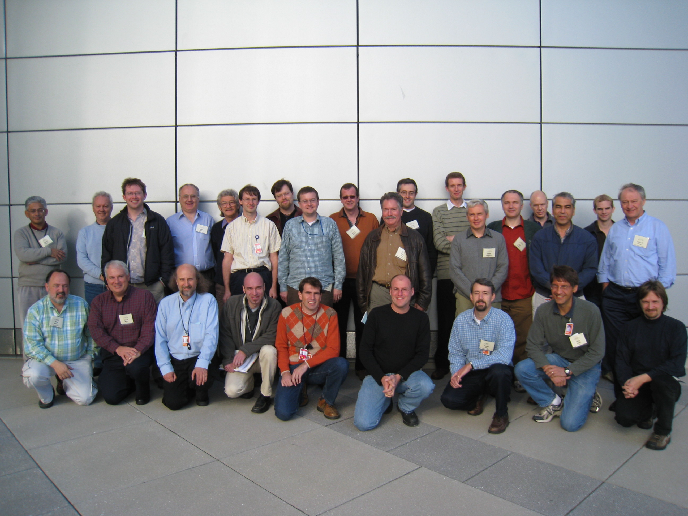

canSAS V
Workshop Report
The Fifth canSAS meeting was held on October 29th
to 31st on the NIST campus in Gaithersburg, Maryland, hosted by the
NCNR SANS group. The aim of the
international organizing committee was to keep the group to a reasonable size of
motivated people to have frank and open discussion of issues and work on
solutions that would be outcomes of the meeting. The format included oral presentations, posters, and
software demos as well as plenty of discussion time from moderated discussions,
to open discussions, to various informal discussion opportunities. The workshop was successful at
stimulating significant levels of interactions and lively discussions.
The following six points are the result of that meeting and
the outcomes agreed to at the final session on Wednesday morning. Most of them consist of the formation
of working groups to keep the momentum going on issues that showed promise at
the meeting:
I.
Facility Representatives Discussion Group
There was agreement to form some kind of Facilities Representatives
Discussion Group (FRDG) that should meet two to four times a year by
teleconference. Preference for
videoconferencing when possible was expressed. Also a mailing list might be an
appropriate means of arranging the meetings, circulating agendas, and extending
discussions.
It was envisaged that this group should not be seen as those
who will carry out all the work or have all the answers. Rather they will be a
contact group who will bring in their local experts to deal with issues as
needed. Briefly noted were the
conflicting requirements of keeping the group small enough to be manageable
while being as inclusive as possible.
Clearly details still need to be worked out and Paul Butler agreed to
spearhead this effort.
The following issues were brought up at the workshop but
were not assigned immediate actions and need further discussion. These could be suitable subjects for
this forum:
- Co-refinement
issues
- Preservation
of data issues
- Auto-capturing
and storing of meta data
- Qz issues
(both in terms of data sampling and resolution)
- Resolution
issues and how to educate users to their relevance
- Naming
convention for reduced data (also to be explored by format group)
- Higher
order reduced data sets (1, 2, 3, 4... etc)
- Libraries
and binary repositories of code – should use portal. Standard should
accommodate both validated and "seat of pants" code. Linux model was suggested as an
example
- Sharing
information on current individual facility initiatives and discussion of
possible collaborative intiatives
- Next
Generation software support:
How do we design and deploy our software to enable the science
- Design
to various level of users
- Real
time fitting @ beamline
- Experiment
planning (include simulations)
- New
software tools (SASSIE, LORES, "microscope")
The following people expressed interest in participating in
this process:
- Peter
Boesecke (ESRF)
- Paul
Butler (NIST)
- Daniel
Clemens (Germany)
- Charles
Dewhurst (ILL)
- Eliott
Gilbert (ANSTO)
- Rex
Hjelm (LANSCE)
- Pete
Jemian (APS)
- Steve
King (ISIS)
- Ken
Littrell (ORNL)
- Adrian
Rennie (Users)
- Nick
Terrill (Diamond)
Timetable:
- First
meeting to be organized in first quarter of 2008
II. 1D Data
Formats
A working group on 1D formats was formed. After some heated debate over the
proposal brought forward by Steve King and Ron Ghosh, an XML 1D format, with 4
default columns defined and others left to individual facility discretion, was
agreed on in principle. Many
details were worked out at the meeting but a working group was formed to
finalize and circulate a final proposal by the end of 2007. It was suggested
that this group also consider the feasibility of file naming convention but
that failure to make progress in that area should not slow the process of
adoption of the file format itself.
Also noted was the similarity to reflectometry data and the fact that at
some point it might be appropriate to contact that group.
Marc Malfois noted that the IUCr SAS CIF format had just
been ratified while Pete Jemian indicated that the SAS NeXus format was "very
close" and would probably be ratified by the next NIAC meeting expected in the
second half of 2008. The working
group was encouraged to keep naming conventions compatible with the NeXus
standard. Pete Jemian being
involved with both groups would help ensure this.
The working group consists of:
- Andrew
Jackson (NIST)
- Pete
Jemian (APS)
- Steve
King (ISIS)
- Ken
Littrell (ORNL)
- Andy
Nelson (ANSTO)
- Ron
Ghosh (ILL) *
- Jan
Ilavsky (APS) *
* Jan and Ron stated that they wanted to be "in the loop"
but not necessarily be directly involved in the decision making.
Timetable:
- Final
proposal for minimal file definition circulating by end of 2007.
- Names
of first facilities implementing standard available by first meeting of FRDG.
- 1st
draft of proposal for 2D reduced format by SAS 2009
III.
IGOR Developers
An IGOR working group was formed to address issues common to
all the IGOR SAS developers.
Whilst it was felt that the IGOR SAS developer community was basically
present at the workshop, the IUCr
sa_scat list might be used to find other interested parties.
The purposes of the group were seen to be:
- Developing
common documented practices, particularly as regards procedure naming
conventions which can lead to conflicts between IGOR packages.
- Promoting
a web page for SAS IGOR code sharing (should link from portal)
- Developing
a common library of documented reusable code
- Developing
common 1D loaders for data
The working group consists of:
- Jan
Ilavsky (APS)
- Andrew
Jackson (NIST)
- Steve
Kline (NIST)
- Ken
Littrell (ORNL)
- Andy
Nelson (ANSTO) (chair)
Timetable:
- Report
on agenda and timetable for agenda by first FRDG meeting
- Have
most in place by Sydney nobugs meeting (fall 2008)
IV.
Global SAS Web Portal
The idea of a global SAS portal was presented by Steve King
and was strongly supported. A central web presence that is the first place that
comes to mind whenever a SAS question comes up is overdue. The demise of CCP13 funding may serve
as the catalyst for this. It will
however require resources to actively maintain the relevance of the site. Web technologies however mean that all
need not reside on a single sever nor is only one person required to do all the
work. NIST, the eScience group at
STFC (L Lerusse), and DANSE SANS group offered support.
A working group was formed consisting of
- Andrew
Jackson (NIST)
- Steve
King (ISIS)
- Jonathan
Rawle (Diamond & ISIS)
Many issues were raised that will need to be addressed to
make this endeavor successful:
- Facilities
must be strongly encouraged to point to the portal and the portal must
link to all facilities
- The
canSAS pages should be move to the site as a new home will be required
with Ron Ghosh’s retirement.
- small-angles.ac.uk
(ISIS/King has content) and smallangles.net (Jackson has canSAS-V website
and mailing lists) should arrange to merge in some fashion
- The
World SANS directory needs to be kept more current (will require somebody
who can pro-actively update it on a fairly frequent basis, particularly
with the wave of new SANS instruments coming on line worldwide). The ILL
would like to continue hosting it, but with the retirement of Roland May,
Peter Timmins will work to identify a new person at ILL for this task.
- A
world wide SAXS directory would also be a good idea – Pete Jemian
will look into what resources are available to build it.
- The
hosting of, or linking to, subversion repositories was seen as a means to
encourage and support collaborative and/or co-operative projects (Source
Forge for SAS). Examples from
the meeting include: CCP13, MOTOFIT, NIST IGOR, DANSE. J Curtis (SASSIE)
is interested in discussing this idea also.
- The
portal should provide a place for, or pointers to, other (and all) SAS
code repositories.
- The
IUCR sa_scat mailing list should be clearly advertised on, and accessible
from, this page. The site
should also provide other, more specialized, mailing lists (lists for the
working groups was an initial example)
Timetable:
- Mailing
lists up by end of November (Done November 6th)
- Merging
of small-angles and smallangles by April 2008
- Have
most of the rest ready by nobugs in Sydney in fall of 2008
V.
Standardization
A Standardization and QA working group was formed, initially
including:
- John
Barker (NIST)
- Peter
Boeseke (ESRF Contact)
- Stephen
Henderson (UMD)
- Rex
Hjelm (LANSCE)
- Jan
Ilavsky (APS)
- Peter
Lindner (ILL)
- Marc
Malfois (Diamond)
- Adrian
Rennie (Uppsala University - chair)
There were three suggested modi operandi for the group and a
mix of all rather than only one method was promoted.
- Run
agreed standards regularly.
Possible standards suggested at meeting were:
- Glassy
Carbon (Jan Ilavsky has standard)
- Ag
Behenate – issues mentioned but currently seems reasonable
- ORNL
(Wignall) standards
- Holographic
grating (Dewhurst)
- Polystyrene
spheres (what size?)
- C60
in CS (see Henderson work?)
- Periodically
run some "real" samples as round robin to test "real world" responses of
instrumentation (high intensity, low intensity, steep slopes, flat
scattering, peaks, Rg etc etc)
- Facility
exchanges where one person with a sample travels to 2 or more facilities
to run the experiments.
Henderson points out benefit of this in terms of actually working
things out while others point to the benefits of personnel interchange.
The purposes of the working group were seen to be:
- To
define appropriate standard protocols and processes for best ensuring standardization.
- To
identify initial facilities for involvement (3-5 each of neutron and
X-ray)
- To
verify management support for the process
- To
identify protocols, what to report and how, for each type of test –
Reports should be available on global portal web pages
- To
eventually explore funding options (NMI3 was suggested as a possible
source for the European side)
It was envisaged that the results of the standardization
would lead to a "quality mark" from the group for facilities that are involved.
The idea being that users could be confident that results they obtain from
those facilities would be comparable.
Timetable:
- Develop
a plan for the path forward with timetables by first meeting of FRDG.
VI.
Workshop Themes
There were a number of general themes of the meeting that
were not action items themselves but capture the overall "sense of the
workshop"
- The
participants strongly support the idea of open development of SAS
software. This is both for reasons of collaboration and for openness of
the scientific process through examination by others of details of methods
used.
- The
participants strongly encourage facilities to publish the definition of
all formats they use such that a newcomer can immediately comprehend said
formats.
- The
participants also encourage facilities to provide the means to read their
data. This could be a library, code examples, or converters to the
to-be-agreed XML format.
- The
participants strongly encourage SAS software developers to publish a clear
definition of the inputs their code expects as well as the definition of
any outputs, in particular details of the output parameters, from their
code. This aims to more easily allow meta-analysis of the scattering data
by aggregation of fitting results.
Workshop Attendees

Back Row (L-R): Ron Ghosh, Peter Timmins, Adrian Rennie,
David Mildner, Lauent Lerusse, Marc Malfois, Ken Littrell, Steve King, Jan
Ilavsky, Stephen Henderson, Jonathan Rawle,
Middle Row (L-R): Andy Nelson, Paul Kienzle, Andrew Jackson,
Rex Hjelm, Peter Boesecke, Boualem Hammouda, Helmut Kaiser
Front Row (L-R): Pete Jemian, Steve Miller, Paul Butler,
Mathieu Doucet, Lionel Porcar, Charles Dewhurst, Steve Kline, John Barker,
Daniel Clemens
Not present for photograph: Michael Agamalian, Joeseph Curtis, Susan Krueger,
Mark Laver, Mike Martin, Michihniro Nagao, Cameron Neylon, Xiangyun Qiu, Bob
Shirley, Piotr Zolnierczuk